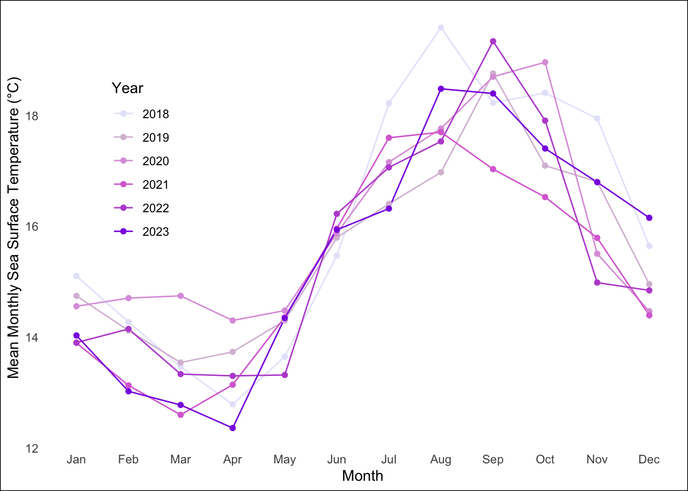
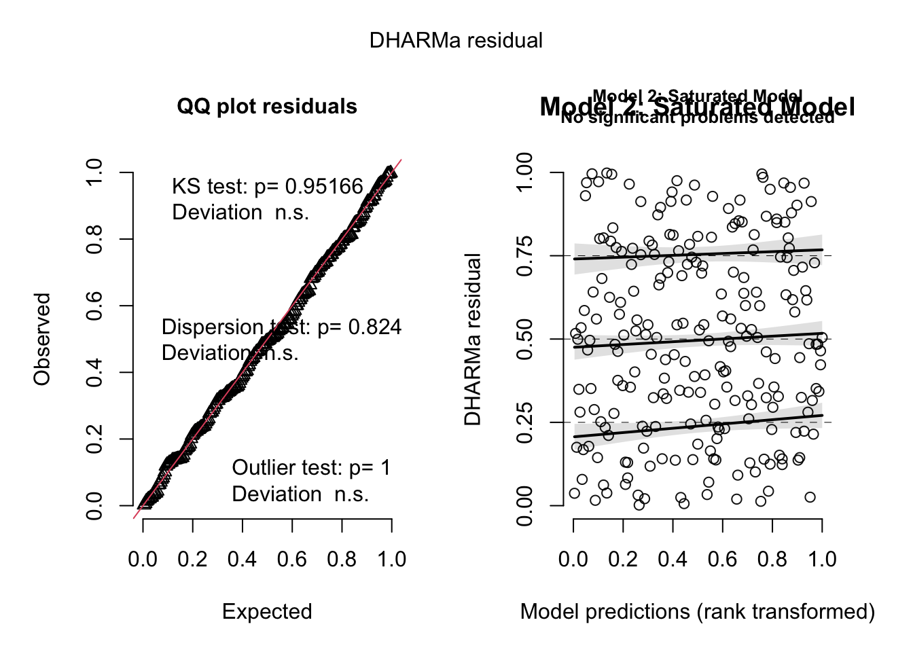
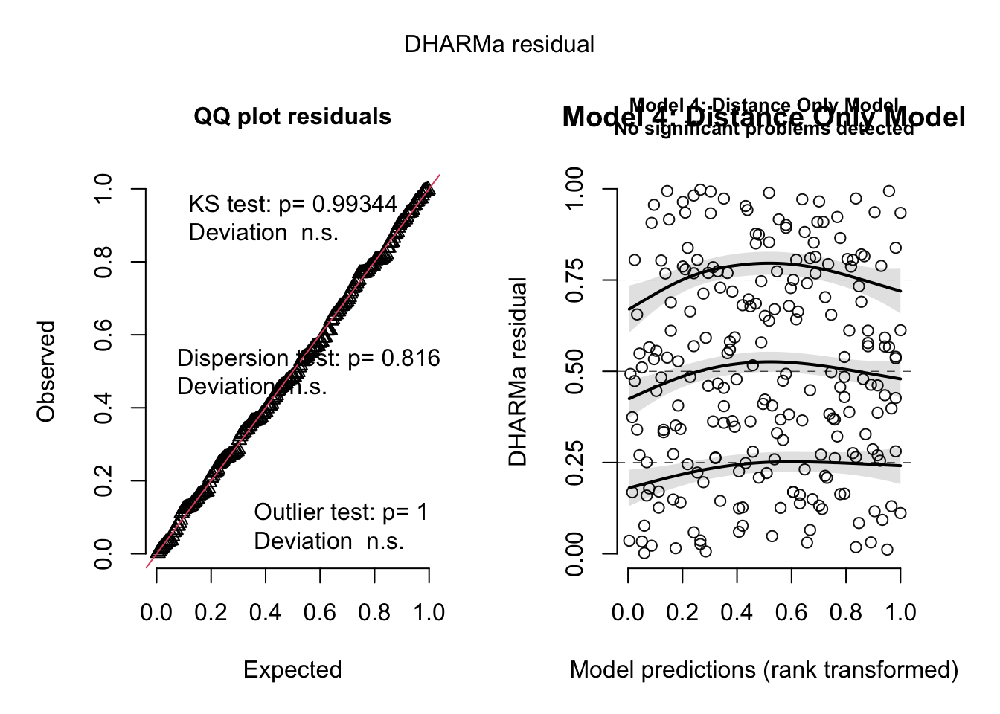

library(tidyverse) # general use
library(janitor) # cleaning data frames
library(here) # file organization
library(MuMIn) # model selection
library(DHARMa) # model diagnostics
library(ggeffects) # getting model predictions
library(scales) # modifying axis labels
# read in your data here
sst <- read.csv(here("data", "SST_update2023.csv"))
# read in your data here
nest_boxes <- read.csv(
# file path
here("data", "occdist.csv"))Final
Set up
Problem 1. Research writing
a. Transparent statistical methods
In part 1, they used a correlation test, specifically Pearson’s r, since they measured the strength and direction of two variables which in this case are two continuous variables: distance from headwater(km) and annual total nitrogen load (kg year-1).
In part 2, thy used a one-way ANOVA test because the report compares the average nitrogen load across more than two groups: urban land, atmospheric deposition, fertilizer, wastewater treatment, and grasslands.
b. More information needed
It would be helpful to do a post-hoc test like Tukey’s HSD as it can determine which groups are different from each other while the ANOVA test signified that there is a difference in the average nitrogen load (kg year⁻¹) between sources (p = 0.02). The Tukey’s HSD will be able to compare the groups to each other (fertilizer vs. grasslands, urban land vs. atmospheric deposition), which will determine which pairs of groups have significantly different mean nitrogen loads.
It could also be helpful to use effect size, such as eta-squared (η²), which measures the proportion of variation explained in nitrogen load (kg year⁻¹) from the five different sources. This means that it quantifies the portion of variance explained by sources. The interpretation for the results can range from negligible (η² < .01), small (.01 < η² < .06), medium (.06 < η² < .14), and large (η² > .14).
c. Suggestions for rewriting
Part 1: There is a relationship between distance from headwater (km) and annual total nitrogen load (kg year⁻¹), suggesting that nitrogen load varies with distance. We rejected the null hypothesis that there is no correlation between these variables (Pearson’s r = [correlation value], p = 0.03, α = 0.05).
Part 2: A difference in the average nitrogen load (kg year⁻¹) in the San Joaquin River Delta was found between the five sources (urban land, atmospheric deposition, fertilizer, wastewater treatment, and grasslands), with an effect size (η² = effect size value) indicating that the proportion of variance explained by source type. This suggests that these sources contribute to variation in nitrogen load in the river delta. (One-way ANOVA; F(4, df₂) = F-value, p = 0.02, α = 0.05)
Problem 2. Data visualization
a. Cleaning and summarizing
sst_clean <- sst |>
mutate(date = ymd(date), # convert date column to Date format
year = year(date), # Extract year from date
month = month(date, label = TRUE) # Extract month as a labeled factor
) |>
filter(year == c("2018", "2019", "2020", "2021", "2022", "2023"))|> # keep years from 2018 to 2023
select(year, month, temp) |> #select columns year, month, and temp
group_by(year, month) |> # Group by year and month
summarize(
mean_monthly_sst = mean(temp, na.rm = TRUE) # Calculate mean temp
) |>
ungroup() # remove grouping
# display 5 random rows
sst_clean |> slice_sample(n = 5)# A tibble: 5 × 3
year month mean_monthly_sst
<dbl> <ord> <dbl>
1 2018 Jan 15.1
2 2018 Apr 12.8
3 2023 Oct 17.4
4 2019 Jan 14.7
5 2023 Jan 14.0# show the structure of the cleaned data
str(sst_clean)tibble [72 × 3] (S3: tbl_df/tbl/data.frame)
$ year : num [1:72] 2018 2018 2018 2018 2018 ...
$ month : Ord.factor w/ 12 levels "Jan"<"Feb"<"Mar"<..: 1 2 3 4 5 6 7 8 9 10 ...
$ mean_monthly_sst: num [1:72] 15.1 14.3 13.5 12.8 13.6 ...b. Visualize the data
library(ggplot2)
sst_visual <- ggplot(data = sst_clean, # new data called sst_visual
aes(x = month, # month on x-axis
y = mean_monthly_sst, # year on y-axis
group = factor(year), # group by year
color = factor(year))) + # color by year
geom_line() +
geom_point() +
scale_color_manual(name = "Year", # manually assign colors by group
values = c("2018" = "#E6E6FA",
"2019" = "#D8BFD8",
"2020" = "#DDA0DD",
"2021" = "#DA70D6",
"2022" = "#BA55D3",
"2023" = "#8A2BE2")) +
labs(x = "Month", # label the title on x-axis
y = "Mean Monthly Sea Surface Temperature (°C)") + # label y-axis title
theme_minimal() +
theme(legend.position = c(0.15, 0.65), # position legend lower left
plot.background = element_rect(fill = "white"), # background white
panel.grid.major = element_blank(), # remove major grid lines
panel.grid.minor = element_blank()) #remove minor grid lines
sst_visual
Problem 3. Data analysis
a. Response variable
The columns cs, sp, and tm, abbreviated for Common Starling, Swift Parrot, and Tree Martin, contain 1’s and 0’s that indicate whether the nest box was occupied by the respective species (1 = occupied by that species, 0 = not). The column e, abbreviated for “empty,” uses 1 to indicate the box was empty and 0 to indicate it was occupied by any species.
b. Purpose of study
Swift Parrots are a critically endangered species and the target for habitat restoration efforts, while Common Starlings and Tree Martins are competitor species that exploit these nest boxes. Unlike the competitors, which benefited more from established boxes, Swift Parrots use cavities only during specific breeding periods and do not return to the same nesting sites from previous years.
c. Difference in “seasons”
Due to a mass flowering event, the summers of 2016 and 2019 were the focus for studying Swift Parrot breeding habits and nest box usage. The boxes were first deployed in 2016, and by 2019, competing species, such as Tree Martin and Common Starlings, had started using them more often during their own nesting periods, while Swift Parrots were only present during the flowering years and absent in-between.
d. Table of models
| Model number | Season | Distance to forest edge | Predictor list |
|---|---|---|---|
| 1 | No predictors (null) | ||
| 2 | X | X | Season + Distance (full) |
| 3 | X | Season only | |
| 4 | X | Distance only |
e. Run the models
mod1 <- glm(sp ~ 1, # null model
data = nest_clean,
family = "binomial")
mod2 <- glm(sp ~ season + edge_distance, # season + distance
data = nest_clean,
family = "binomial")
mod3 <- glm(sp ~ season, # season
data = nest_clean,
family = "binomial")
mod4 <- glm(sp ~ edge_distance, # distance
data = nest_clean,
family = "binomial")f. Check the diagnostics
# simulate residuals for each model
residuals1 <- simulateResiduals(mod1)
residuals2 <- simulateResiduals(mod2)
residuals3 <- simulateResiduals(mod3)
residuals4 <- simulateResiduals(mod4)
# plotting diagnostics for each model
plot(residuals1, main = "Model1: Null Model")
plot(residuals2, main = "Model 2: Saturated Model")
plot(residuals3, main = "Model 3: Season Only Model")
plot(residuals4, main = "Model 4: Distance Only Model")
g. Select the best model
AICc(mod1, # Akaike’s Information Criterion choosing best model
mod2,
mod3,
mod4) |> # best model
# arranging output in descending order of AIC
arrange(AICc) df AICc
mod2 3 226.3133
mod4 2 229.6716
mod3 2 236.3744
mod1 1 238.8318The best model as determined by Akaike’s Information Criterion (AIC) is the saturated model on season (year) and edge distance to the forest for Swift Parrot’s occupancy. This model suggests that the year the nesting occured and the distance influenced whether the Swift Parrots used the boxes.